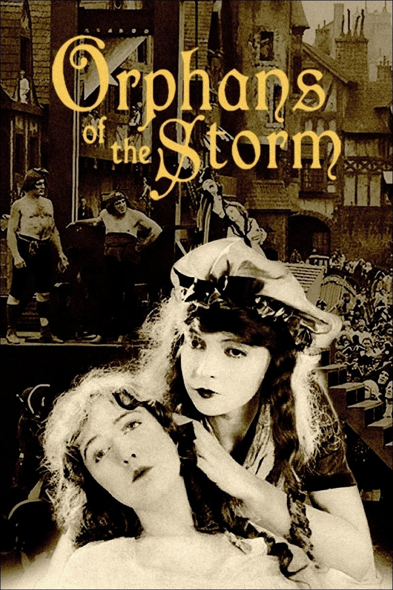

Fiche technique

- Titre français
- Les Deux Orphelines
- Titre original
- Orphans of the Storm
- Réalisation, scénario
- D. W. Griffith (scénario signé « Marquis de Trolignac »)[11]
- D'après
- la pièce Les Deux Orphelines d'Adolphe d'Ennery et Eugène Cormon (1874)[1]
- Photographie
- G. W. Bitzer, Hendrik Sartov, Paul H. Allen[3]
- Montage
- James Smith, Rose Smith[3]
- Décors
- Charles M. Kirk, Edward Scholl[2]
- Musique (ciné-concert)
- Louis F. Gottschalk, William F. Peters[3]
- Production
- D. W. Griffith, Inc.
- Distribution
- United Artists
- Interprètes principaux
- Lillian Gish, Dorothy Gish, Joseph Schildkraut, Monte Blue, Morgan Wallace, Lucille La Verne[3]
- Tournage
- Juin – octobre 1921, studio D. W. Griffith de Mamaroneck (New York), avec des extérieurs à Orient Point (Long Island)[7]
- Sortie
- 28 décembre 1921 (É.-U.) · 30 janvier 1922 (R.-U.)[10]
- Durée
- ~150 min en version de sortie initiale (roadshow) ; une version plus courte a circulé par la suite[2]
- Genre
- Mélodrame historique, muet, noir et blanc teinté
Synopsis
À Paris, à la veille de la Révolution française. Louise, enfant naturelle d'une famille aristocratique, est abandonnée sur le parvis de Notre-Dame et recueillie par les parents d'Henriette : les deux fillettes grandissent comme deux sœurs, sans lien de sang[9]. Une épidémie emporte leurs parents et laisse Louise aveugle[9]. Les deux jeunes femmes partent pour Paris dans l'espoir qu'un médecin rende la vue à Louise, mais un aristocrate débauché, le marquis de Praille, fait enlever Henriette pour la mener à ses plaisirs[6]. Livrée à elle-même, Louise tombe aux mains de la mère Frochard, une mendiante qui l'exploite dans les rues[9].
Sauvée par le chevalier de Vaudrey, aristocrate loyal envers le peuple, dont elle s'éprend, Henriette voit son destin rattrapé par la tourmente révolutionnaire : de Vaudrey est arrêté comme aristocrate, et Henriette avec lui pour l'avoir caché[1]. Seule l'intervention de Danton, figure tutélaire et rédemptrice de la Révolution dans le récit de Griffith, permet d'arracher les deux amants à la guillotine in extremis[1].
Contexte de production
Le film adapte Les Deux Orphelines, mélodrame créé à Paris en 1874 par Adolphe d'Ennery et Eugène Cormon, plus tard décliné en roman[2]. La pièce, adaptée pour la scène américaine dès 1874 sous le titre The Two Orphans, avait déjà été portée à l'écran treize fois depuis 1906, dont deux versions américaines antérieures (1911, par Otis Turner ; 1915, par Herbert Brenon, film aujourd'hui perdu avec Theda Bara)[1][2]. L'actrice Kate Claxton, qui avait créé le rôle sur scène et en détenait les droits, se montra réticente à une nouvelle adaptation ; Griffith dut également racheter les droits de distribution américains d'une version allemande concurrente, tournée au même moment, pour protéger l'exploitation de son propre film[1].
C'est Lillian Gish qui aurait suggéré le projet à Griffith, pensant confier le second rôle à sa sœur Dorothy ; contre toute attente, Griffith attribua à Dorothy — habituellement cantonnée aux rôles de comédienne — le rôle passif de l'aveugle Louise, quand Lillian était plutôt connue pour incarner les héroïnes en détresse[3]. Griffith signa lui-même le scénario sous le pseudonyme « Marquis de Trolignac »[11].
Le tournage se déroula de juin à octobre 1921 au studio que Griffith avait installé à Mamaroneck, dans l'État de New York, après le succès de Way Down East (1920)[7][20]. D'importants décors y furent construits pour recréer le Paris révolutionnaire, avec prise de la Bastille et dispositif de guillotine[1]. Le film sortit le 28 décembre 1921 distribué par United Artists, la société de production indépendante que Griffith avait cofondée deux ans plus tôt avec Mary Pickford, Douglas Fairbanks et Charlie Chaplin[20].
Structure narrative
Le récit se construit en deux mouvements distincts. Le premier reprend l'intrigue de la pièce originale : mélodrame de la séparation, de l'exploitation et de l'enlèvement, dans la veine du théâtre populaire du XIXe siècle. Le second, ancré explicitement dans la Révolution française et nourri, selon plusieurs analystes, de motifs empruntés à A Tale of Two Cities de Dickens, convoque des figures historiques — Louis XVI, Robespierre, Danton, une apparition de Lafayette — pour hisser le mélodrame intime au rang de fresque politique[3][6].
Un critique anglophone a compté jusqu'à cinq sous-intrigues distinctes, entremêlées dès l'ouverture puis progressivement resserrées vers un unique dénouement[6]. Cette complexité, caractéristique de la manière dickensienne revendiquée par le film, culmine dans le procédé le plus identifiable de Griffith : le montage alterné, déployé ici dans sa forme la plus aboutie pour la course-poursuite finale vers la guillotine.
Mise en scène et procédés techniques
Comme la plupart des grands films muets de cette période, la copie d'exploitation n'était pas uniformément noir et blanc : le film recourt à des teintes monochromes — rouge, bleu, vert, jaune, sépia — appliquées bobine par bobine pour orienter l'émotion du spectateur en l'absence de dialogue parlé, une pratique que l'historien du cinéma Paul O'Dell a documentée dès 1970[1].
Griffith orchestre par ailleurs de vastes scènes de foule pour donner corps aux émeutes révolutionnaires et aux excès aristocratiques, avec une reconstitution soignée du Paris du XVIIIe siècle saluée pour son ampleur[6]. Le jeu d'acteur, souvent jugé plus subtil que dans les précédents films de Griffith, est porté par trois chefs opérateurs aux sensibilités complémentaires : Billy Bitzer, vétéran des années Biograph, Hendrik Sartov, connu pour son travail en flou artistique sur le visage de Lillian Gish, et Paul H. Allen[3][6].
En intercoupant les deux lignes d'action, Griffith « étire » le temps de l'action : les quelques pas qu'Henriette met à parcourir vers l'échafaud, une fois fragmentés par le montage, occupent à l'écran deux à trois fois leur durée réelle[1].
Personnages principaux
Henriette Girard
Lillian GishSœur adoptive dévouée, figure d'endurance confrontée successivement à la violence aristocratique puis à la machine judiciaire révolutionnaire.
Louise Girard
Dorothy GishSœur aveugle et passive — un contre-emploi pour Dorothy, habituellement cantonnée aux rôles de comédienne[3].
Chevalier de Vaudrey
Joseph SchildkrautL'« aristocrate ami du peuple », incarnation de la thèse d'« entente inter-classes » défendue par le film[19].
Danton
Monte BlueFigure idéalisée d'une Révolution raisonnable, opposée au fanatisme prêté à Robespierre.
Mère Frochard
Lucille La VerneMendiante exploiteuse ; l'actrice servira, quinze ans plus tard, de modèle de référence aux animateurs de Disney pour la vieille sorcière de Blanche-Neige[6].
Marquis de Praille
Morgan WallaceAristocrate débauché, incarnation de la corruption de l'Ancien Régime.
Thèmes
- Conflit de classes et « entente inter-classes ». Le film présente explicitement la Révolution comme un plaidoyer contre la haine destructrice, mettant dos à dos une aristocratie décadente et un peuple emporté par la fureur, au profit d'une voie médiane incarnée par Danton et le chevalier de Vaudrey[19].
- Allégorie politique et propagande. Griffith fait explicitement de la Révolution française une mise en garde contre la « anarchie et le bolchevisme », en écho à la Révolution russe de 1917 et à la Peur rouge américaine de 1919-1920[4]. Les critiques françaises contemporaines pointent une relecture historique très malmenée, allant jusqu'à assimiler Robespierre au bolchevisme et Danton à Abraham Lincoln[13].
- Sororité et famille choisie. Le lien entre Henriette et Louise, sans base biologique, structure tout le récit comme un idéal de loyauté qui résiste à la séparation physique.
- Vulnérabilité et cécité. La cécité de Louise en fait une victime doublement exposée, économiquement et physiquement ; la restauration finale de sa vue referme le récit sur une résolution aussi symbolique que mélodramatique.
- Architecture morale du mélodrame. Vice et vertu s'opposent point par point — aristocrate noble contre aristocrate débauché, révolutionnaire humain contre révolutionnaire fanatique — jusqu'au sauvetage final qui solde d'un coup toutes les souffrances accumulées.
Réception critique et postérité
À sa sortie, la presse professionnelle se montre enthousiaste : le magazine Moving Picture World salue un spectacle jugé sans équivalent à l'écran.
« No more gorgeous thing has ever been offered on the screen. » Moving Picture World, cité par TCM
Le succès commercial, lui, fait débat selon les sources : plusieurs historiens du cinéma le comptent, avec Way Down East, parmi les derniers grands triomphes de Griffith[21], tandis que d'autres le qualifient d'échec commercial relatif aux productions antérieures du cinéaste[1]. Un fait fait consensus : sa sortie fut en partie éclipsée, une semaine plus tard, par la première de Foolish Wives d'Erich von Stroheim[4].
Rétrospectivement, le film recueille 88 % d'avis favorables sur l'agrégateur Rotten Tomatoes (17 critiques)[1]. La critique Pauline Kael, tout en jugeant le film éloigné des sommets de Griffith, y reconnaît des moments de « sublimité théâtrale ».
Le film marque la dernière collaboration de Lillian et Dorothy Gish avec Griffith, et annonce, avec le recul, le déclin commercial du cinéaste — jusqu'à son départ forcé d'United Artists après l'échec d'Isn't Life Wonderful en 1924[21]. Ironie de l'histoire souvent relevée : ce film ouvertement anti-bolchevique a nourri, par la sophistication de son montage alterné, l'œuvre théorique des cinéastes soviétiques Sergueï Eisenstein et Vsevolod Poudovkine[4].
Tombé dans le domaine public aux États-Unis, le film a été restauré et préservé par le Museum of Modern Art avec le soutien du Lillian Gish Trust for Film Preservation, et continue d'être projeté en ciné-concert[19].
Conclusion
Les Deux Orphelines se tient à un point de bascule : sommet technique du montage alterné et de la mise en scène de foule chez Griffith, il paraît au moment précis où son cinéma commence à être supplanté par une nouvelle génération — celle-là même que sa grammaire narrative, paradoxalement, contribuera à former. Le film ne peut cependant pas être dissocié du projet idéologique qui l'anime : sous couvert de fresque historique, il instrumentalise la Révolution française pour servir un discours anti-bolchevique daté et une falsification assumée de l'histoire. Sa valeur aujourd'hui est donc double et difficile à réconcilier — une leçon de technique narrative dont l'efficacité émotionnelle reste intacte un siècle plus tard, indissociable d'une allégorie politique réactionnaire qu'il convient de nommer plutôt que d'esthétiser.
Sources
- Wikipedia (EN), « Orphans of the Storm » — en.wikipedia.org/wiki/Orphans_of_the_Storm
- Wikipédia (FR), « Les Deux Orphelines (film, 1921) » — fr.wikipedia.org
- Turner Classic Movies, fiche film — tcm.com/tcmdb/title/326474
- Turner Classic Movies, article rétrospectif — tcm.com/articles/74681
- Encyclopædia Britannica — britannica.com/topic/Orphans-of-the-Storm
- IMDb, fiche et critiques — imdb.com/title/tt0012532
- IMDb, Filming & Production — imdb.com/title/tt0012532/locations
- Letterboxd — letterboxd.com/film/orphans-of-the-storm
- FilmAffinity — filmaffinity.com/en/film367560
- Internet Archive — archive.org/details/OrphansOfTheStorm_201312
- Critikat, critique — critikat.com
- AlloCiné — allocine.fr
- SensCritique, critiques — senscritique.com
- La Cinémathèque française — cinematheque.fr/film/32512
- Le Monde de Djayesse (blog cinéma muet) — djayesse.over-blog.com
- Silent-ology — silentology.wordpress.com
- The Guys From... — theguysfrom.com
- EBSCO Research Starters — ebsco.com
- Film at Lincoln Center — filmlinc.org
- Patch (Larchmont, NY), histoire du studio de Mamaroneck — patch.com
- The Early Cinema, filmographie D. W. Griffith — theearlycinema.weebly.com
- Wikimedia Commons, Category:Orphans of the Storm (iconographie) — commons.wikimedia.org